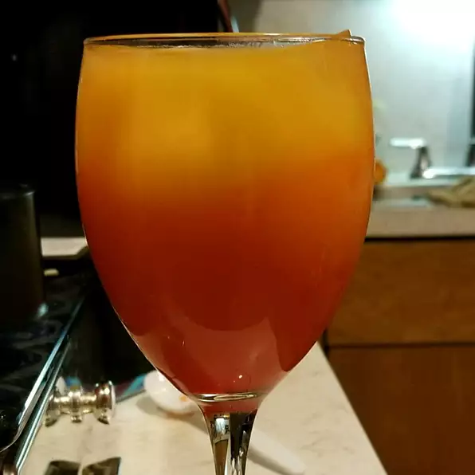

Tequila Sunrise

The tequila sunrise is a cocktail made of tequila, orange juice, and
grenadine syrup.
Ingredients
- ¾ cup freshly squeezed orange juice
- 1 (1.5 fluid ounce) jigger tequila
- ice cubes
- ½ (1.5 fluid ounce) jigger grenadine syrup
- 1 slice orange, for garnish
- 1 maraschino cherry for garnish
Directions
-
Stir orange juice and tequila together. Fill a chilled 12-ounce glass
with ice cubes; pour in orange juice mixture. Slowly pour in the
grenadine, and allow it to settle to the bottom of the glass (be
patient). Garnish with a slice of orange and a maraschino cherry.